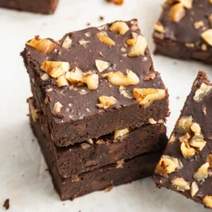

Black Bean Brownies

Black bean brownies, delicious and fudge-packed without the guilt
These black bean brownies are a delicious late night treat. They are packed with protein, have a rich flavor, and keep you satisfied longer. Enjoy them as a guilt free snack. Easy to prepare with minimal ingredients.
Ingredients
- 1 15 oz can of black beans, drained and rinsed
- 3 large eggs
- 1/2 cup pure maple syrup
- 1/3 cup melted coconut oil
- 1/4 cup cocoa powder or raw cacao powder
- 1/8 teaspoon fine sea salt
- 1 teaspoon pure vanilla extract
- 1/2 cup chocolate chips
- 1/3 cup chopped raw walnuts, optional
Instructions
- Preheat oven to 350°F and grease an 8x8-inch baking pan.
- Place beans, eggs, maple syrup, coconut oil, cocoa powder, salt and vanilla in the bowl of a food processor or blender and blend until smooth.
- Remove the blade and gently stir in your chocolate chips and walnuts, if using. Another option is to sprinkle the walnuts on top of the brownie batter once you pour it into the pan.
- Transfer mixture to the prepared pan. Bake for 35 minutes, or until brownies are set in the center and a toothpicks comes out clean. Cool completely, cut into squares and enjoy!